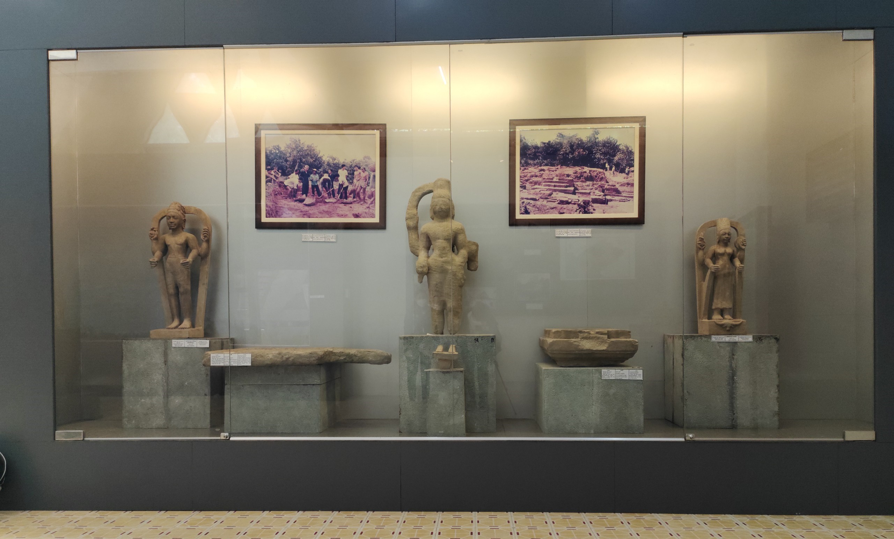
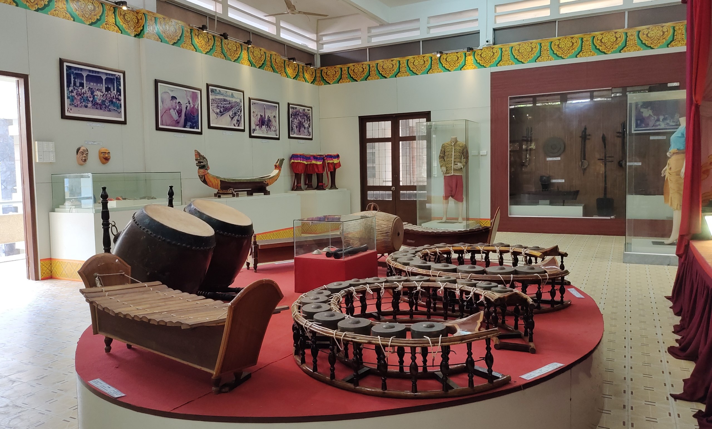
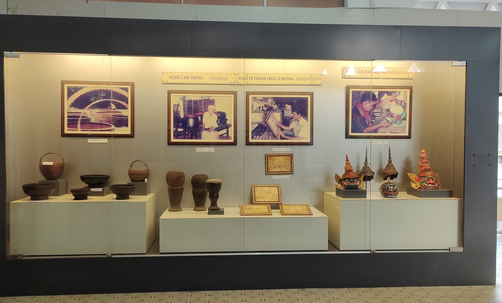
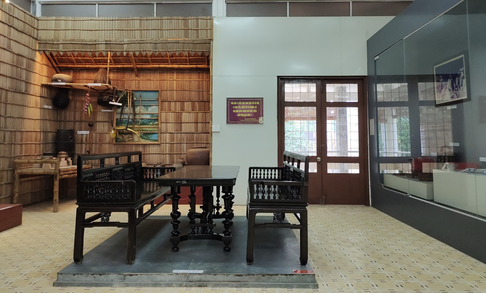

Directory
Introduction
The Khmer Cultural Museum of Tra Vinh Province is located in the complex of Ba Om Pond - Ang Pagoda - Museum; It is located in hamlet 4, ward 8, Tra Vinh city, Tra Vinh province, Vietnam. This Museum is one of the two largest Khmer cultural museums in Vietnam. It was built from 1992 to 1996, and was officially put into operation in 1997. According to Mr. Tuan, Director of The Tourism Promotion Center, the Department of Culture, Sports and Tourism has recently restored the Khmer Cultural Museum with a budget of about 2.4 billion VND. The museum is now open free of charge to all visitors ...
Festivals
Among the festivals and cultural events held annually in Tra Vinh, the three festivals that attract the most visitors are: Ok Om Bok festival of Khmer people, Vu Lan Thang Hoi or also known as Ong Bon worshiping ceremony. of the Chinese, and the Nghinh Ong ceremony of the Kinh people. The annual Ok Om Bok festival is held at Ba Om Pond, belonging to the complex of relics of Ao Ba Om - Ang Pagoda - Museum of Khmer Ethnic Culture ...
Exhibition areas

Exhibition area 1
Exhibition area 1 displays and introduces the spiritual culture of the Khmer people in Tra Vinh, in which the Khmer Theravada Buddhist pagodas play a leading and unique role. In the most solemn position reproduces part of the main hall of the Khmer Theravada Buddhist pagoda; the Dharma chair is covered when the senior monk holds a sermon on festive occasions ...

Exhibition area 2
Exhibition area 2 introduces the material culture of food, clothing, accommodation, production and daily activities of the Khmer people in Tra Vinh. The artifacts are agricultural tools of Khmer people such as water fan motors, plows, harrows, drills, transplanting diggers, scythes, machetes, sickles etc. in agricultural production; bell-shaped trapping baskets and other bamboo fishing traps (xà ngôm, xà neang, lọp, xà no…) in fishing; and household ceramic products ...

Exhibition area 3
Exhibition area 3 introduces the traditional craftwork of the Khmer ethnic minority in Tra Vinh such as mat weaving, wood carving, bamboo knitting, flat rice making and many other craft jobs… Exhibits include images and labor tools such as fabric looms, mat weaving area; mortars and pestles for making flat rice, wood/bamboo sculptures, knitted items, sculptures in paintings, paintings on glass or on canvas, etc. Theses are carved and crafted with skillful hands of Khmer artisans ...
